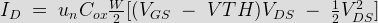

MOSFET stands for metal oxide semiconductor field effect transistor. It is capable of voltage gain and signal power gain. The MOSFET is the core of integrated circuit designed as thousands of these can be fabricated in a single chip because of its very small size. Every modern electronic system consists of VLST technology and without MOSFET, large scale integration is impossible.
It is a four terminals device. The drain and source terminals are connected to the heavily doped regions. The gate terminal is connected top on the oxide layer and the substrate or body terminal is connected to the intrinsic semiconductor.
MOSFET has four terminals which is already stated above, they are gate, source drain and substrate or body. MOS capacity present in the device is the main part. The conduction and valance bands are position relative to the Fermi level at the surface is a function of MOS capacitor voltage. The metal of the gate terminal and the sc acts the parallel and the oxide layer acts as insulator of the state MOS capacitor. Between the drain and source terminal inversion layer is formed and due to the flow of carriers in it, the electric current flows in MOSFET the inversion layer is properties are controlled by gate voltage. Thus it is a voltage controlled device.
Two basic types of MOSFET are n channel and p channel MOSFETs. In n channel MOSFET is electric current is due to the flow of electrons in inversion layer and in p channel electric current is due to the flow of holes.
Another type of characteristics of clarification can be made of those are enhancement type and depletion type MOSFETs. In enhancement mode, these are normally off and turned on by applying gate voltage. The opposite phenomenon happens in depletion type MOSFETs.
Working Principle of MOSFET
The working principle of MOSFET depends up on the MOS capacitor. The MOS capacitor is the main part. The semiconductor surface at below the oxide layer and between the drain and source terminal can be inverted from p-type to n-type by applying a positive or negative gate voltages respectively. When we apply positive gate voltage the holes present beneath the oxide layer experience repulsive force and the holes are pushed downward with the substrate. The depletion region is populated by the bound negative charges, which are associated with the acceptor atoms. The positive voltage also attracts electrons from the n+ source and drain regions in to the channel. The electron reach channel is formed. Now, if a voltage is applied between the source and the drain, electric current flows freely between the source and drain gate voltage controls the electrons concentration the channel. Instead of positive if apply negative voltage a hole channel will be formed beneath the oxide layer.
Now, the controlling of source to gate voltage is responsible for the conduction of electric current between source and the drain. If the gate voltage exceeds a given value, called the three voltage only then the conduction begins.
The electric current equation of MOSFET in triode region is -

Where, un = Mobility of the electrons
Cox = Capacitance of the oxide layer
W = Width of the gate area
L = Length of the channel
VGS = Gate to Source voltage
VTH = Threshold voltage
VDS = Drain to Source voltage.
P-Channel MOSFET
MOSFET which has p - channel region between source any gate is known as p - channel MOSFET. It is a four terminal devices, the terminals are gate, drain, source and substrate or body. The drain and source are heavily doped p+ region and the substrate is in n-type. The electric current flows due to the flow of positively charged holes that’s why it is known as p-channel MOSFET. When we apply negative gate voltage, the electrons present beneath the oxide layer, experiences repulsive force and they are pushed downward in to the substrate, the depletion region is populated by the bound positive charges which are associated with the donor atoms. The negative gate voltage also attracts holes from p+ source and drain region in to the channel region. Thus hole which channel is formed now if a voltage between the source and the drain is applied electric current flows. The gate voltage controls the hole concentration of the channel. The diagram of p- channel enhancement and depletion MOSFET are given below.
p - channel MOSFET - Enhancement Mode
p - channel MOSFET - Depletion Mode
N-Channel MOSFET
MOSFET having n-channel region between source and drain is known as n-channel MOSFET . It is a four terminal device, the terminals are gate, drain and source and substrate or body. The drain and source are heavily doped n+ region and the substrate is p-type. The electric current flows due to flow of the negatively charged electrons, that’s why it is known as n- channel MOSFET. When we apply the positive gate voltage the holes present beneath the oxide layer experiences repulsive force and the holes are pushed downwards in to the bound negative charges which are associated with the acceptor atoms. The positive gate voltage also attracts electrons from n+ source and drain region in to the channel thus an electron reach channel is formed, now if a voltage is applied between the source and drain. The gate voltage controls the electron concentration in the channel n-channel MOSFET is preferred over p-channel MOSFET as the mobility of electrons are higher than holes. The diagrams of enhancements mode and depletion mode are given below.
n - channel MOSFET - Enhancement Mode
n - channel MOSFET - Depletion Mode
 by
by {kind=link}
{kind=link}
{kind=link}